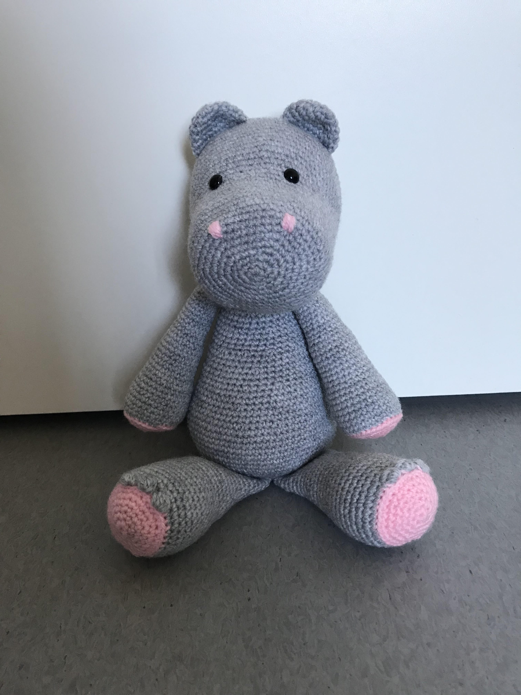
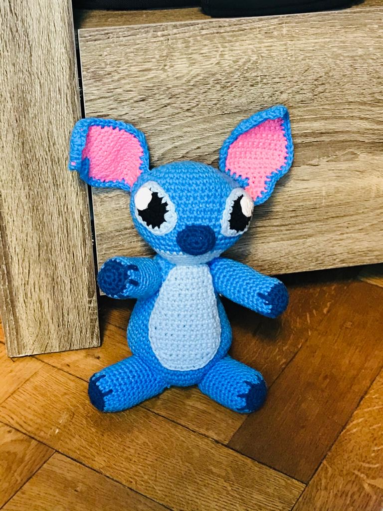

Fluffy konijn
is gehaakt met 100% polyester en is wasbaar op 30 graden.
De prijs voor dit lieve konijn is € 25,-

Dino de Draak
is gehaakt met katoen en is wasbaar op 30 graden.
De prijs voor deze lieve Dino de draak is € 25,-

Nijlpaard
is gehaakt met acryl maar kan natuurlijk ook in katoen gehaakt worden.
De nijlpaard is wasbaar op 30 graden. De prijs voor dit schattige nijlpaard is € 25,-

Stitch
is gehaakt met katoen en kan in de wasmachine op 30 graden.
De prijs voor Stitch is € 25,-

Hamster Cato
is gehaakt met katoen en is wasbaar op 30 graden.
De prijs van deze lieve Hamster Cato is € 25,- en kan ook in andere kleuren gehaakt worden.